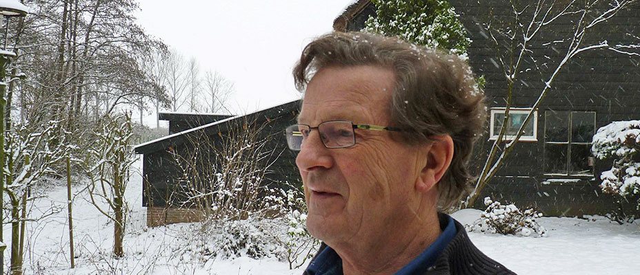

Theoloog, predikant, mede-oprichter l'Abri Nederland, auteur
Welkom op deze website met preken, lezingen, boeken en artikelen van Wim Rietkerk. De publicaties zijn geordend op thema, zodat u gemakkelijk kunt vinden wat u zoekt.
...and Holding On
De kunst van het ouder worden
Over Gods hand in de geschiedenis
Handbook for Doubters
Bekijk alle boeken →
De rode draad door Wim's werk: hoe ga je om met twijfel en kom je tot geloof?
Over Gods aanwezigheid en leiding in het wereldgebeuren en je persoonlijk leven.
Over het evangelie als bevrijding uit wetticisme, en leven vanuit genade.
De kruiswoorden als sleutel tot het verstaan van het kruis.
Over levensbestemming, loslaten en vasthouden in de laatste levensfase.
Over de vreugde en het geheim van het bidden.
Over de brug tussen geloof en de hedendaagse cultuur.